광고 수익은 어떻게 나뉘나요
영상은 전체 작업을 세 덩어리로 나눠요. 사이트를 내 도메인에 올려 두는 기본 세팅, 사람들이 찾아오게 하는 검색엔진 등록, 그리고 돈을 받는 광고 세팅이에요. 첫 화면의 화살표 순서가 곧 이 문서의 순서예요.
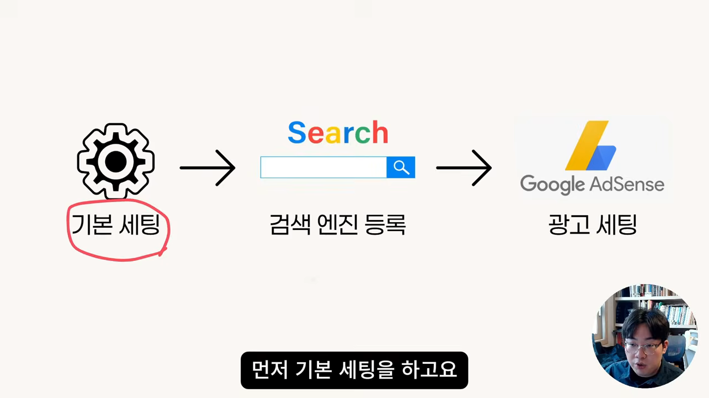
수익 모델은 구글 애드센스예요. 내 사이트에 광고 자리를 내주고, 방문자가 그 광고를 보면 광고비 일부가 사이트 주인에게 들어와요. 그러려면 먼저 애드센스 승인을 받아야 해요.
광고비 1,000원이 어떻게 나뉘나요
발표자는 광고주가 1,000원을 쓴 경우로 돈의 흐름을 따라가요. 슬라이드 왼쪽 위 Google Ads 로고가 광고주가 돈을 내는 곳이고, 아래 Google AdSense 로고가 그 광고를 사이트에 뿌려 주는 곳이에요. 오른쪽 줄은 위에서 아래로 돈이 줄어드는 순서예요. 맨 아래 680원 옆에 손글씨로 68%가 적혀 있어요.
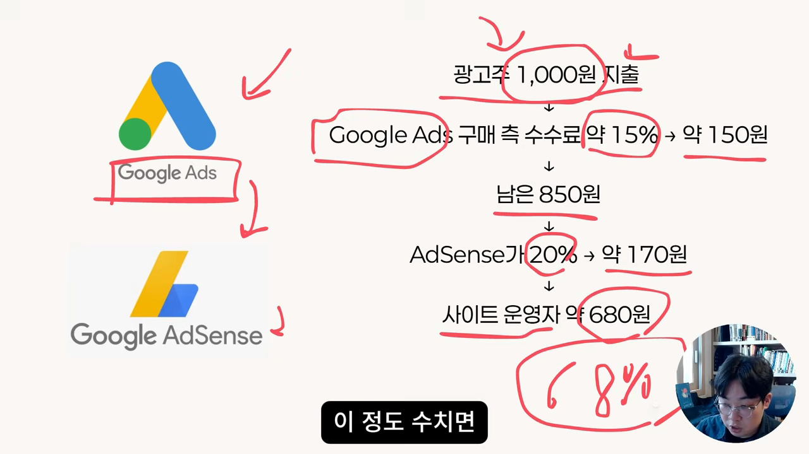
지금은 구글 애즈 말고 다른 광고 플랫폼의 광고도 애드센스로 들어와요. 그래도 기본 정책은 68% 정도라고 생각하면 된다고 해요.
새 사이트는 한동안 승인이 안 난다는 '샌드박스 기간' 이야기도 나와요. 발표자는 개인적으로 믿지 않는다고 말해요.
실습 사이트와 배포 준비
실습 대상은 지난 영상에서 AI로 만든 복리 계산기 사이트예요. 원금, 매월 적립금, 투자 기간, 연수익률을 넣으면 미래 금액을 계산하고 그래프로 보여 줘요. 화면 가운데 곡선이 시간이 지날수록 자산이 불어나는 모습이에요.
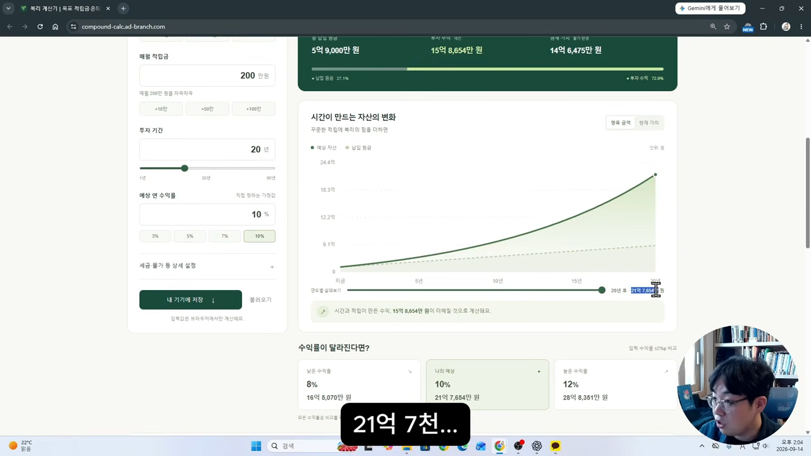
계산기만 있는 게 아니라 복리 공식과 구매력을 설명하는 글 페이지도 있어요. 아래 화면은 그런 글 한 편으로, '큰 미래 금액과 오늘의 구매력은 다릅니다'라는 소제목과 '자료와 계산 근거' 목록이 보여요. 발표자는 글 중간과 맨 아래에도 광고를 넣을 거라고 해요.
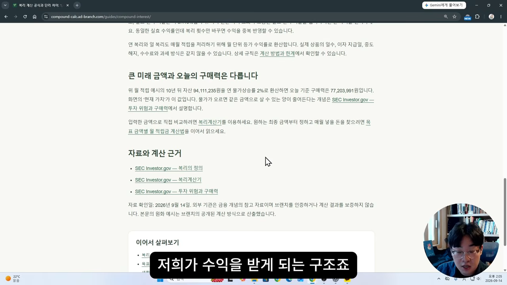
먼저 내 도메인으로 배포돼 있어야 해요
세팅의 전제는 사이트가 내 도메인으로 배포돼 있는 거예요. 발표자는 클라우드플레어에서 도메인 ad-branch.com을 사고, 사이트를 클라우드플레어 Workers에 올렸어요. 아래 대시보드 왼쪽에 Domains와 Workers가 보이고, 가운데에 compound-calc.ad-branch.com이 Workers 프로젝트와 연결된 모습이 보여요.
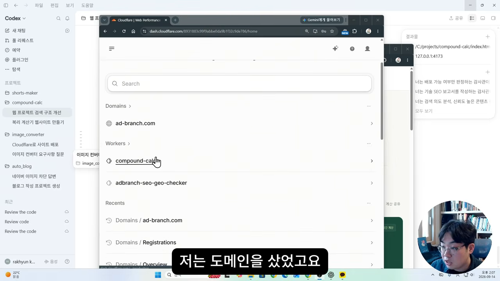
배포까지 됐다면 할 일은 두 갈래예요. 구글 애드센스 승인과 세팅, 그리고 검색엔진 세팅이에요.
애드센스에 사이트 등록하고 ads.txt 올리기
애드센스에 들어가 '새 사이트'를 누르면 아래처럼 웹사이트 주소를 넣는 창이 떠요. 여기에 내 사이트 주소를 넣고 저장해요. 뒤쪽 표에는 이미 등록해 둔 ad-branch.com이 보여요.
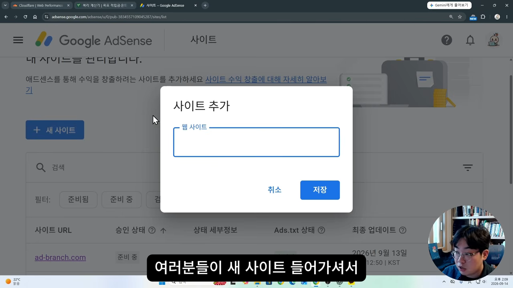
소유권 확인은 ads.txt로
사이트를 누르면 '사이트 소유권을 확인하세요' 단계가 나와요. 확인 방법 선택에 애드센스 코드 스니펫, Ads.txt 스니펫, 메타 태그 세 가지가 있고, 그 아래 회색 칸에 google.com, pub-…로 시작하는 한 줄이 보여요. 발표자는 이 중 ads.txt를 가장 추천해요.
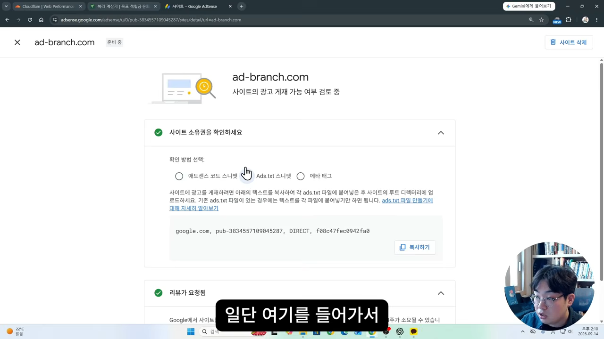
AI에게 ads.txt 등록과 배포를 맡겨요
복사한 줄을 AI 코딩 도구의 새 채팅에 붙이고 그 아래에 "이걸 ads.txt로 등록해줘. 배포까지 완료해줘."라고 써요. 발표자는 말로는 챗GPT라고 부르지만, 화면에 보이는 건 OpenAI의 Codex 앱이에요. 입력창에 @를 치면 아래처럼 플러그인 목록이 뜨고, 맨 위 Cloudflare를 고르면 배포까지 그쪽으로 이어져요.
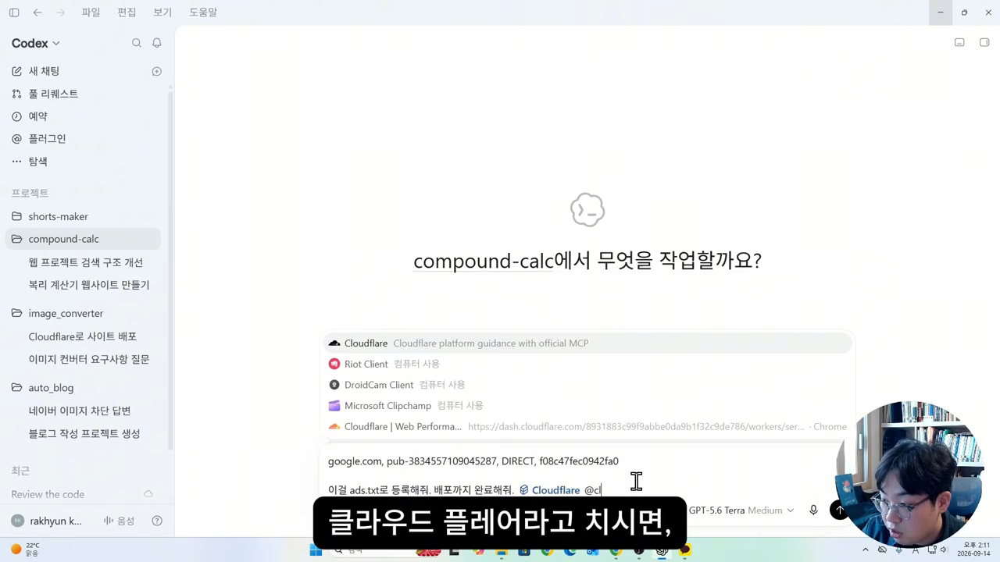
한 가지는 꼭 짚고 넘어가요. 이 한 줄은 계정마다 달라요. 영상에 나온 줄을 그대로 쓰면 광고 수익이 발표자에게 가요.
발표자는 토큰을 아끼려면 일반 플러스 계정에서는 낮은 사양의 모델을 쓰고, 패스트 모드도 끄라고 덧붙여요.
배포가 끝나면 사이트 주소 뒤에 /ads.txt를 붙여 들어가 봐요. 아래처럼 하얀 화면 맨 위에 그 한 줄만 보이면 성공이에요. 애드센스는 이 줄을 보고 이 사이트가 내 것인지 알아봐요.
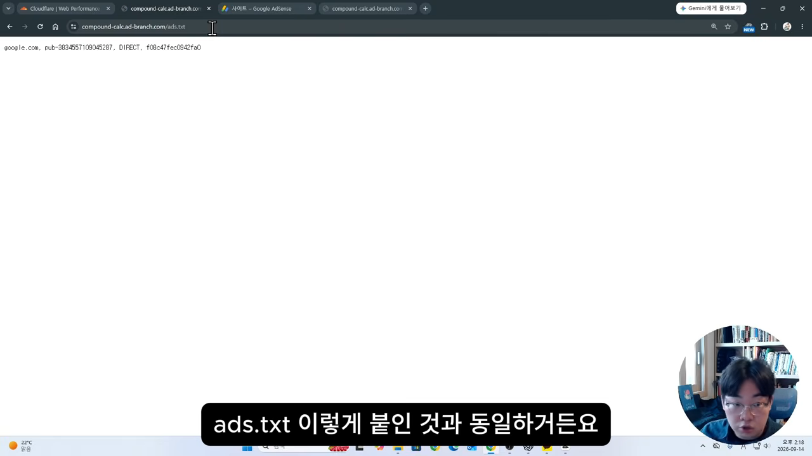
자동 광고와 디스플레이 광고 단위
소유 확인이 끝나면 광고를 세팅해요. 광고는 자동 광고와 수동 광고 두 가지를 같이 써요. 자동 광고는 구글이 자리를 골라 주고, 수동 광고는 내가 고른 자리에 광고 단위를 직접 넣어요.
자동 광고 켜기
애드센스 왼쪽 메뉴의 광고로 들어가면 '사이트 광고 관리'가 나오고, 내 사이트 옆 수정 버튼을 누르면 광고 설정 미리보기가 열려요. 아래 화면 오른쪽 위 '자동 광고' 스위치가 핵심이에요. 그 아래 의도 기반 형식, 오버레이 형식, 인페이지 형식을 하나씩 열어 고를 수 있어요. 가운데에는 내 사이트가 모바일 화면으로 미리 보여요.
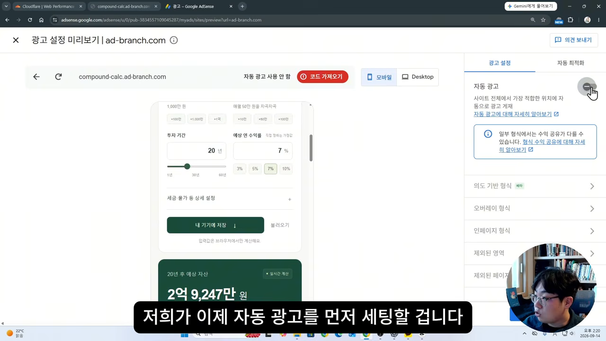
오버레이 형식을 열면 세 가지가 나와요. 발표자가 특히 강조하는 건 맨 아래 모바일 전면광고예요. 단가가 꽤 높아서 꼭 켜라고 해요.
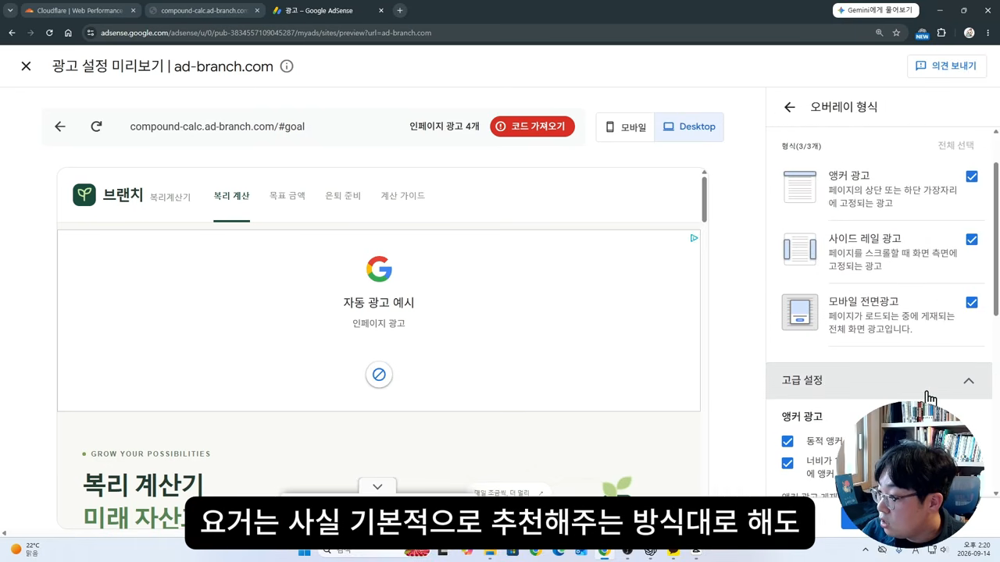
| 오버레이 형식 | 화면 설명 | 발표자 의견 |
|---|---|---|
| 앵커 광고 | 페이지 상단이나 하단 가장자리에 고정돼요 | 켜 둬요 |
| 사이드 레일 광고 | 스크롤할 때 화면 측면에 고정돼요 | 켜 둬요 |
| 모바일 전면광고 | 페이지가 로드되는 중에 뜨는 전체 화면 광고예요 | 단가가 높아서 꼭 켜요 |
의도 기반 형식은 자주 쓰지 않는다고 해요. 자동 최적화 탭의 실험 트래픽 같은 설정도 지금은 크게 신경 쓰지 않아도 돼요. 가장 중요한 건 자동 광고를 켜고 사이트에 적용해 저장하는 거예요.
디스플레이 광고 단위 하나 만들기
수동 광고는 위쪽 '광고 단위 기준' 탭에서 만들어요. '신규 광고 단위 만들기' 아래 카드 네 장이 보여요. 맨 왼쪽 디스플레이 광고에만 '권장' 표시가 있고, 나머지 셋은 '네이티브'라고 적혀 있어요.
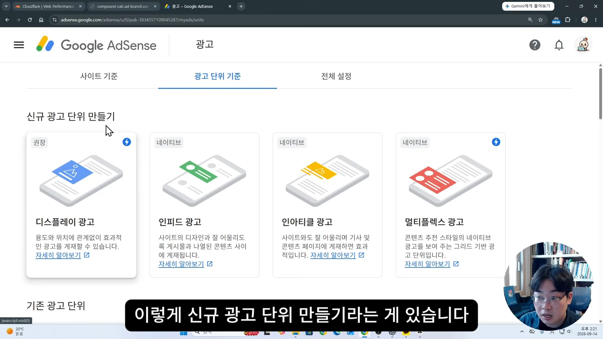
| 광고 단위 | 영상 속 설명 | 이번에 쓰나요 |
|---|---|---|
| 디스플레이 광고 | 단가가 가장 높아요 | 이것 하나만 써요 |
| 인피드 광고 | 사이트 디자인과 어울리게 목록 사이에 들어가요 | 안 써요 |
| 인아티클 광고 | 글 안에서 나와요 | 안 써요 |
| 멀티플렉스 광고 | 여러 개 박스가 묶여서 떠요 | 안 써요 |
디스플레이 광고를 누르면 아래 화면이 나와요. 오른쪽 위 광고 단위 이름에는 나중에 알아볼 수 있는 이름을 넣어요. 발표자는 '애드브랜치 복리계산기 디스플레이 광고'라고 적었어요. 그 아래 광고 크기는 '반응형'으로 둬요. 왼쪽 미리보기의 사각형, 수평형, 수직형은 반응형 광고가 어떤 모양으로 나올 수 있는지 보여 주는 예시예요.
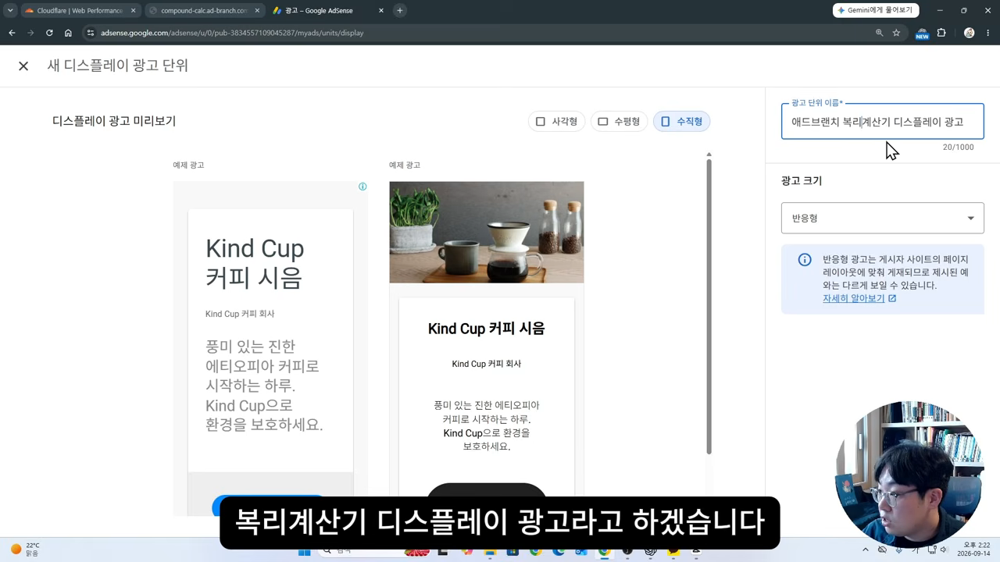
반응형을 고르는 이유는 사이트도 반응형이기 때문이에요. 넓은 화면, 좁은 화면 어디에 넣든 그 자리 크기에 맞는 광고가 알아서 들어가요. 만들기를 누르면 코드 생성기 창에 광고 코드가 나와요. 이걸 그대로 복사해요.
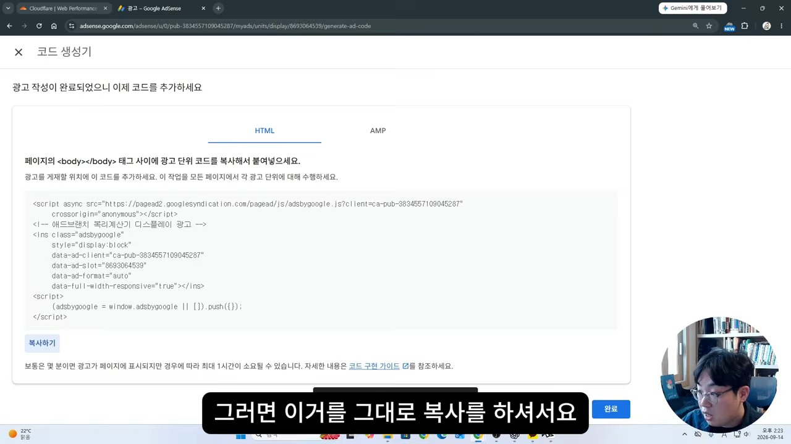
AI에게 광고 자리 맡기기
복사한 광고 코드를 아까 ads.txt를 등록한 채팅에 이어서 붙여요. 아래 화면 위쪽에는 직전 작업 결과로 public/ads.txt 파일이 추가됐다는 기록이 남아 있어요. 입력창에는 ins 태그로 된 광고 코드가 있고, 그 아래에 "이건 내 구글애드센스 디스플레이 반응형 광고야. 이걸 적절한 위치에 넣어줘."라고 적었어요.
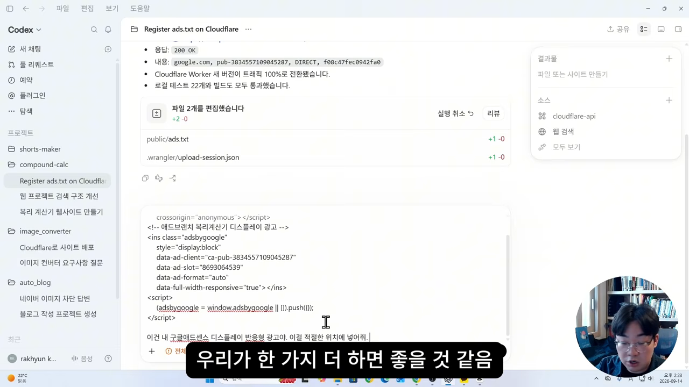
개발 환경에서는 빈칸을 보여 달라고 해요
이 영상에서 가장 쓸모 있는 팁이 여기서 나와요. 프롬프트 끝에 한 줄을 더 붙여요.
개발 라이브가 아니라 개발 환경에서는 광고가 뜨지 않아도 어떤 위치에 들어갔는지 알 수 있도록 빈칸을 자리를 채워줘
— 영상 13:35
이유는 간단해요. 승인 전에는 실제 사이트를 새로고침해도 광고가 안 보여요. 그러면 AI가 광고를 어디에 넣었는지 확인할 방법이 없어요. 그래서 "개발 환경에서 사이트를 띄워봐. 인앱 브라우저로 보여줘"라고 시켜, Codex 앱 안의 브라우저로 개발 환경을 열어 봐요.
개수를 늘리고, 주석으로 자리를 고쳐요
처음엔 광고가 딱 한 개만 들어갔어요. 그래서 "기본 페이지에도 3개 정도는 넣어주고, 각 글마다 2개 이상씩 들어가도록" 해 달라고 다시 요청했어요. 아래 화면 왼쪽이 그 결과 요약이에요. 기본 페이지 3개, 글 페이지 2개, 그리고 개발 환경에서는 모든 슬롯이 '개발 환경 광고 영역'으로 표시된다고 적혀 있어요.
그런데 기본 페이지에는 광고 두 개가 연달아 붙어서 마음에 안 들었대요. 이때 쓰는 게 주석 기능이에요. 오른쪽 브라우저 위 파란 띠에 '주석 달기'가 켜져 있고, 오른쪽 위 '보내기 2'는 주석 두 개를 달았다는 뜻이에요. 하나는 겹친 광고를 지우라는 것, 하나는 수익률 비교 근처에 광고를 넣으라는 거예요.
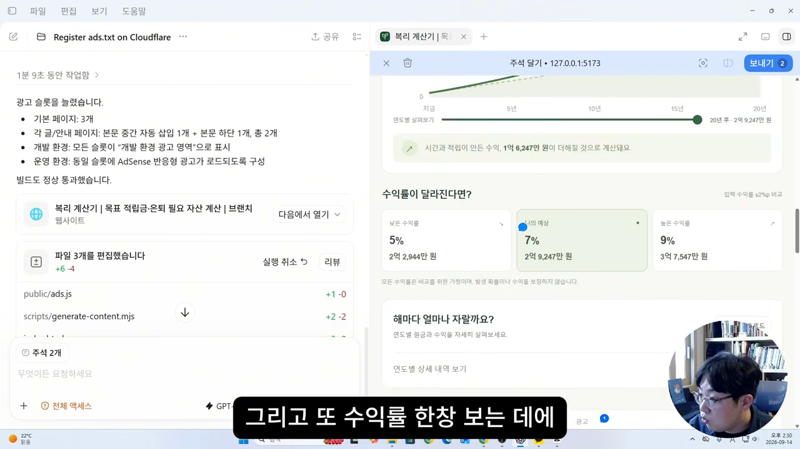
주석을 단 뒤에는 "주석을 참고해서 해당 위치에 광고가 들어가도록 수정해줘"라고만 하면 돼요. 아래가 그 결과예요. 왼쪽 목록에는 겹쳐 있던 광고 1개를 지우고 히어로 섹션 아래와 입력 사이드바 아래에 하나씩 넣었다고 적혀 있어요. 오른쪽에는 회색 점선 칸 안에 '개발 환경 광고 영역 · 운영 사이트에서 반응형 광고가 표시됩니다'라는 글자가 보여요.
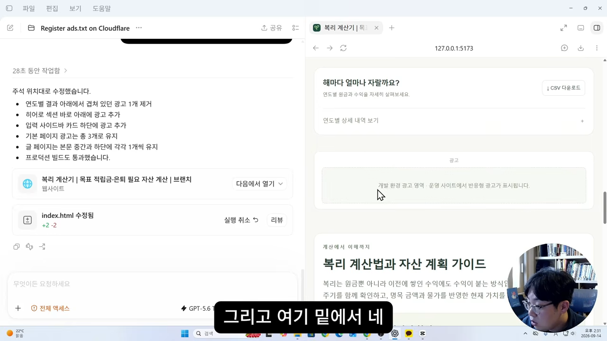
이제 승인을 기다려요
세팅이 끝나면 애드센스 승인만 남아요. 아래 화면처럼 두 단계에 모두 초록 체크가 있고, 위에는 '사이트의 광고 게재 가능 여부 검토 중'이라고 떠 있어요. 발표자는 녹화 전날 리뷰를 요청해 둔 상태였어요.
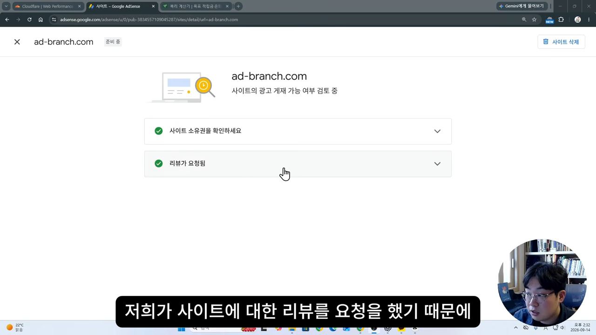
승인에는 한두 달이 걸릴 수 있어요. 발표자 경험으로는 한 번에 통과한 사이트도, 서너 달 걸린 사이트도 있었어요. 아무것도 고치지 않고 다시 리뷰를 요청했는데 통과한 적도 있대요. 그래서 승인은 운이라고 보고, 그 전에 세팅을 다 해 두라고 해요. 검색 유입을 쌓아 두면 승인되는 순간부터 수익이 들어와요.
구글 서치 콘솔에 사이트 등록
검색엔진은 가장 많이 쓰는 구글부터 등록해요. 도구는 구글 서치 콘솔이에요. '속성 추가'를 누르면 아래처럼 속성 유형을 고르는 창이 떠요. 왼쪽이 도메인, 오른쪽이 URL(Uniform Resource Locator) 접두어예요.
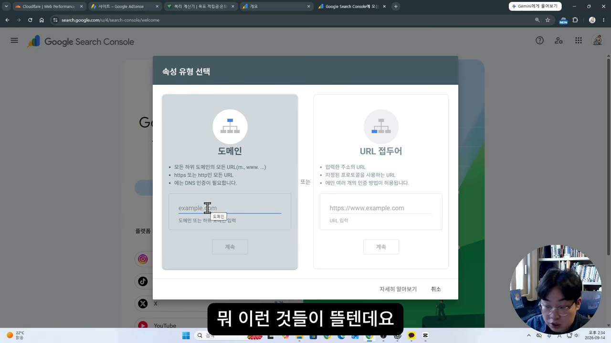
계속을 누르면 소유권을 확인하라는 창이 떠요. 도메인 속성은 DNS(Domain Name System) 레코드로 확인해요. 아래 창 1번 '안내 대상' 목록에서 Cloudflare.com을 고르면, 2번 설명처럼 구글이 클라우드플레어 DNS 계정에 접근하도록 허용하는 것만으로 인증이 끝나요. 오른쪽 아래 '확인 시작'을 누르고 승인하면 바로 완료돼요.
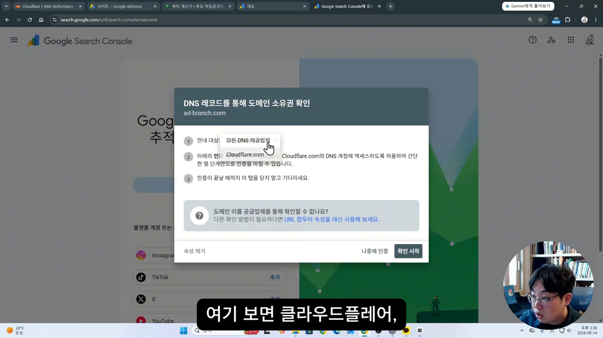
카페24나 다른 업체에서 도메인을 샀다면 화면이 조금 달라요. 그 업체 관리 화면에 들어가 안내대로 TXT 레코드를 등록하면 돼요. 그래도 막히면 화면 내용을 그대로 긁어 AI에게 물어보라고 해요. 어려운 과정이 아니라서 시키는 대로 하면 된대요.
등록이 끝나면 서치 콘솔 왼쪽 위에 ad-branch.com 도메인 속성이 생겨요. 다음은 이 속성에 사이트맵을 알려 주는 일이에요. 발표자는 Codex에게 "이거 구글 서치 콘솔에 등록하고 싶어. 어떻게 하면 돼"라고 물어보면 방법을 알려 준다고 해요.
사이트맵 제출과 색인 요청
서치 콘솔에 사이트맵을 넣기 전에 먼저 확인할 게 있어요. 사이트 주소 뒤에 /sitemap.xml을 붙여 들어가 보는 거예요. 발표자는 메모장에 주소를 크게 적어 보여 줘요.
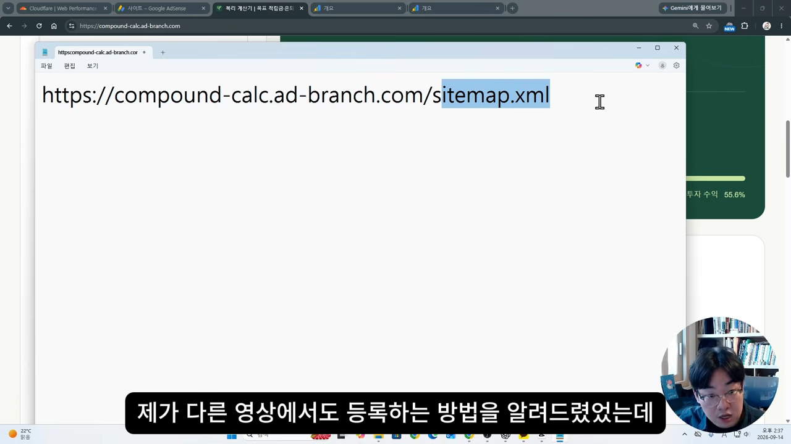
들어가 보면 아래처럼 꾸밈 없는 코드 화면이 나와요. loc 태그마다 페이지 주소가 하나씩 들어 있어요. 메인 페이지 다음으로 /guides/compound-interest/, /guides/monthly-savings/, /guides/retirement/, /methodology/, /about/ 주소가 이어져요.
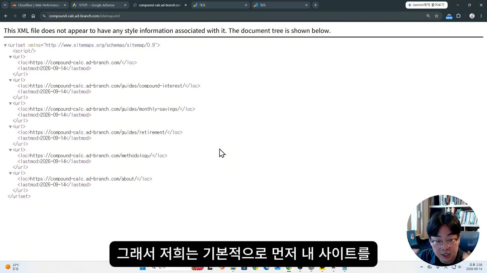
검색엔진은 사이트맵부터 읽어요
발표자는 사이트맵이 왜 필요한지 말로 풀어 설명해요. 사람은 링크를 하나씩 눌러 보면 되지만, 컴퓨터가 그렇게 하면 비효율적이에요. 그래서 검색엔진은 사이트맵을 먼저 읽고, 그 안의 페이지를 하나씩 읽은 다음, 어떤 검색어에 보여 줄지 정해요. 아래 그림은 그 흐름과, 영상에서 이어 설명한 색인 대기 과정을 한 줄로 이은 거예요.
flowchart LR A["사이트맵 제출"] --> B["검색엔진이
사이트맵 읽기"] B --> C["페이지를
하나씩 읽기"] C --> D["어떤 검색어에
보여 줄지 판단"] D --> E["색인 완료
(며칠 걸려요)"] F["URL 검사 →
색인 생성 요청"] -.->|"우선순위 대기열"| C
서치 콘솔에 사이트맵 제출하기
서치 콘솔 왼쪽 메뉴의 Sitemaps로 가서 '새 사이트맵 추가'에 주소를 넣고 제출해요. 메인 도메인을 도메인 속성으로 등록해 뒀기 때문에, 메인 도메인뿐 아니라 compound-calc 서브 도메인 사이트맵도 같은 속성에 제출할 수 있어요. 발표자는 메인 도메인에도 SEO(Search Engine Optimization)·GEO(Generative Engine Optimization) 테스트용 사이트를 하나 올려 두었다고 덧붙여요.
제출하면 아래처럼 결과가 떠요. 가운데 '발견된 페이지' 숫자가 6이고, 그 아래 초록 체크와 함께 '사이트맵 처리 완료'가 보여요. 앞에서 본 사이트맵의 주소 여섯 개를 구글이 읽었다는 뜻이에요.
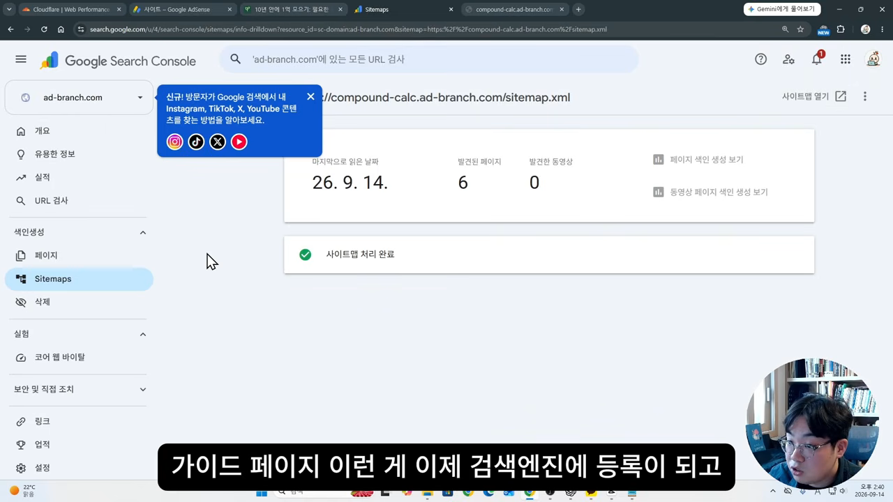
색인을 앞당기는 URL 검사
사이트맵을 올려 두면 구글이 사이트를 돌아다니며 '이건 올려도 되겠다' 싶은 페이지를 색인해요. 이 과정을 기다려야 해서 바로 검색에 나오지는 않아요. 며칠 지나면 기본 페이지부터 검색에서 확인할 수 있대요.
앞당기는 방법이 URL 검사예요. 서치 콘솔 위쪽 검색창에 기본 페이지 주소를 넣으면 아래처럼 'URL이 Google에 등록되어 있지 않음'이 떠요. 오른쪽의 '색인 생성 요청'을 누르면 직접 색인을 요청할 수 있어요. 아래 세부 정보에 Sitemaps 칸이 방금 낸 sitemap.xml을 가리키고 있는 것도 보여요.
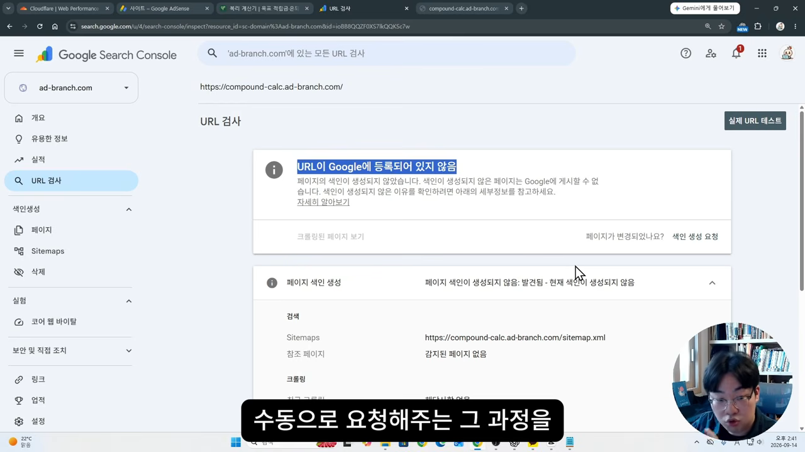
요청하면 잠시 뒤 아래 같은 창이 떠요. '색인 생성 요청됨' 아래에 이 URL이 우선순위 크롤링 대기열에 추가됐다고 적혀 있어요. 색인이 끝난 게 아니라 색인될 확률이 높아진 거예요.
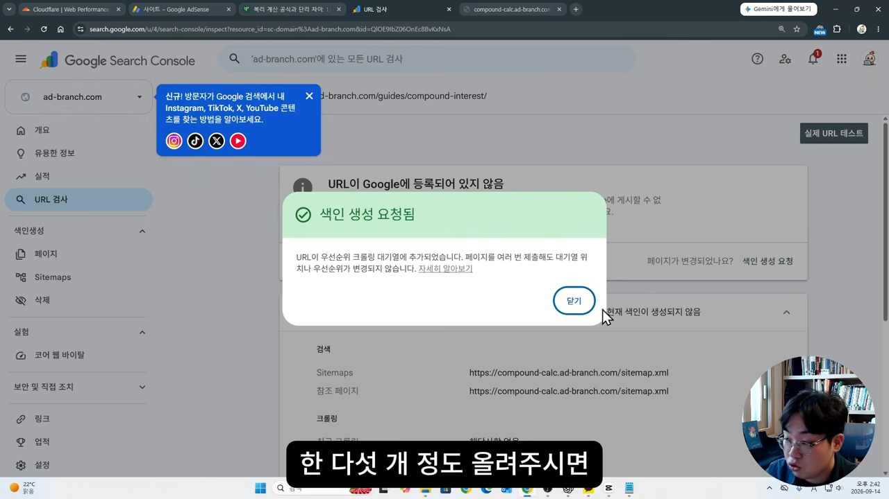
대신 많이 하면 안 돼요. 하루에 할 수 있는 양이 정해져 있고, 많이 한다고 좋지도 않대요. 기본 페이지, 정책 관련 페이지, 카테고리 페이지 위주로 다섯 개 정도면 충분하다고 해요. 정리 단계에서는 3~5개, 많아야 7개라고 말해요.
네이버 서치 어드바이저와 빙 웹마스터
구글 다음은 네이버예요. 네이버 서치 어드바이저에 네이버 아이디로 로그인하고, 웹마스터 도구에서 사이트 주소를 등록해요. 그러면 사이트 소유를 확인해 달라는 화면이 나와요. 아래쪽 'HTML 태그'를 고르면 회색 칸에 meta name="naver-site-verification"으로 시작하는 한 줄이 보여요.
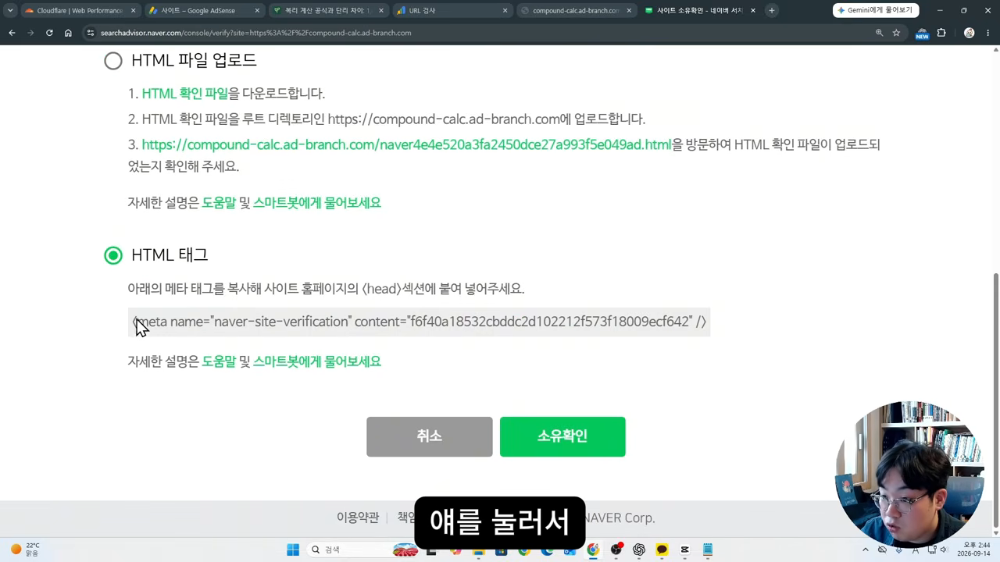
이 줄을 복사해 AI에게 "네이버 서치 어드바이저를 위해 이걸 붙여야 돼. 배포까지 해줘"라고 넘겨요. AI가 소유 확인 태그를 추가했다고 하면 네이버로 돌아가 '소유확인'을 눌러요. 확인이 끝나면 사이트 목록에 내 사이트가 올라가요.
사이트맵 제출, robots.txt 확인, 수집 요청
사이트를 누르면 왼쪽에 요약, 리포트, 요청, 검증 메뉴가 있어요. 요청 메뉴 안의 '사이트맵 제출'로 가서 구글에 낸 것과 같은 sitemap.xml 주소를 넣고 확인을 눌러요.
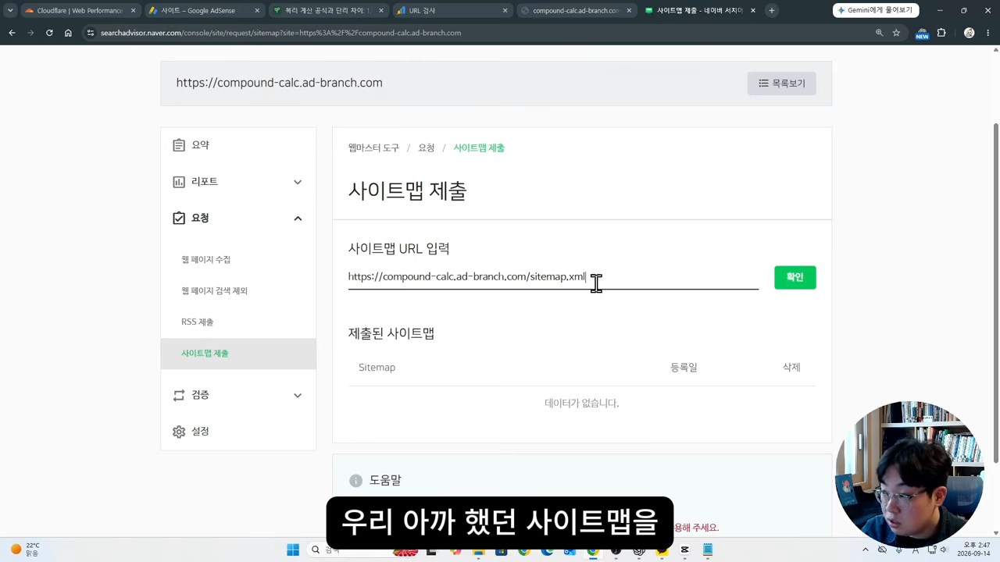
발표자가 꼭 하라고 하는 건 검증 메뉴의 robots.txt 확인이에요. robots.txt에는 어떤 로봇이 사이트를 수집해도 되는지가 적혀 있어요. 검색 로봇뿐 아니라 클로드 봇 같은 AI 크롤러도 포함돼요. 앞선 영상의 무료 프롬프트로 세팅했다면 이미 들어 있을 거래요.
마지막으로 요청 메뉴의 '웹 페이지 수집'에서 기본 페이지 주소를 넣고 수집을 요청해요. 아래 화면 수집 요청 내역에 한 줄이 생긴 게 보여요. 구글의 색인 생성 요청과 같은 역할이에요.
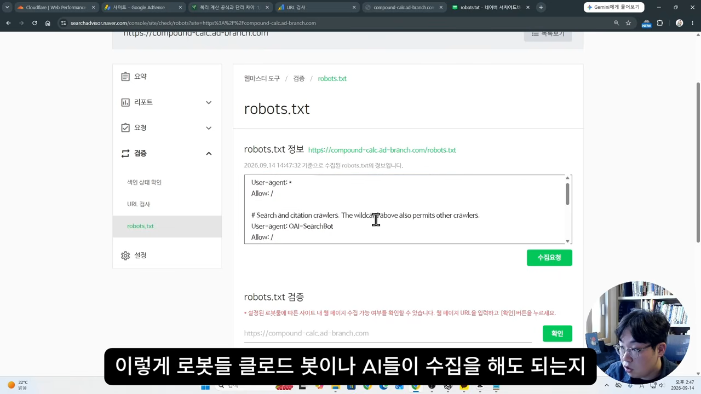
빙은 구글 서치 콘솔에서 가져와요
빙은 마이크로소프트 엣지의 기본 검색엔진이에요. 크롬을 따로 깔지 않는 사람들, 컴퓨터에 익숙하지 않은 사람들이 꽤 쓴다고 해요. 빙 웹마스터에는 구글 계정으로 로그인할 수 있어요. 서치 콘솔에 쓴 아이디로 로그인하면 아래 화면이 나와요.
왼쪽 'Import your sites from GSC' 상자를 보면 체크 표시 세 줄이 있어요. 사이트 인증이 필요 없고, 사이트맵을 바로 가져오고, 시간을 많이 아낀다는 내용이에요. 오른쪽 Settings 패널은 화면 언어를 한국어로 바꾸려고 연 거예요.
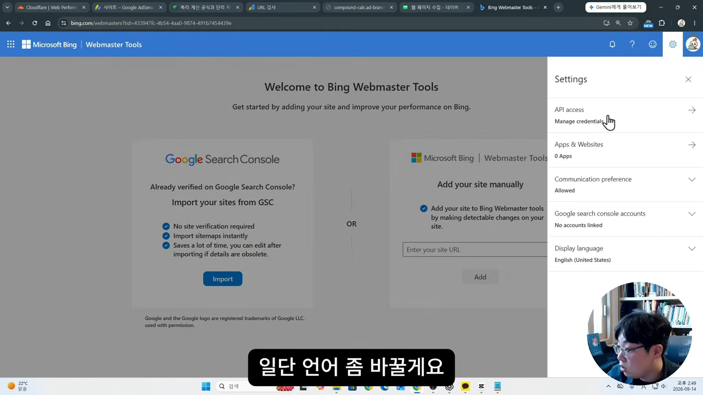
가져오기를 누르면 서치 콘솔에 등록한 사이트 한 개가 발견됐다고 나와요. 다시 가져오기를 누르면 등록이 끝나요. 사이트맵은 조금 기다리면 자동으로 들어오는데, 늦으면 사이트맵 메뉴에서 직접 제출해도 돼요. 아래 화면은 직접 제출한 뒤 사이트맵 목록에 sitemap.xml이 처리 중으로 올라간 모습이에요.
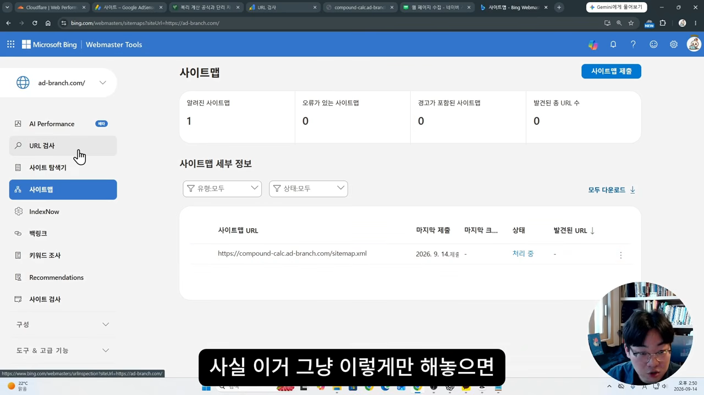
빙에도 URL 검사가 있어요. 기본 페이지를 검사하면 '검사된 URL은 Bing에 알려져 있지 않습니다'라는 빨간 칸과 '색인화 요청' 버튼이 나와요. 이 버튼을 눌러 구글과 똑같이 몇 개만 요청해요.
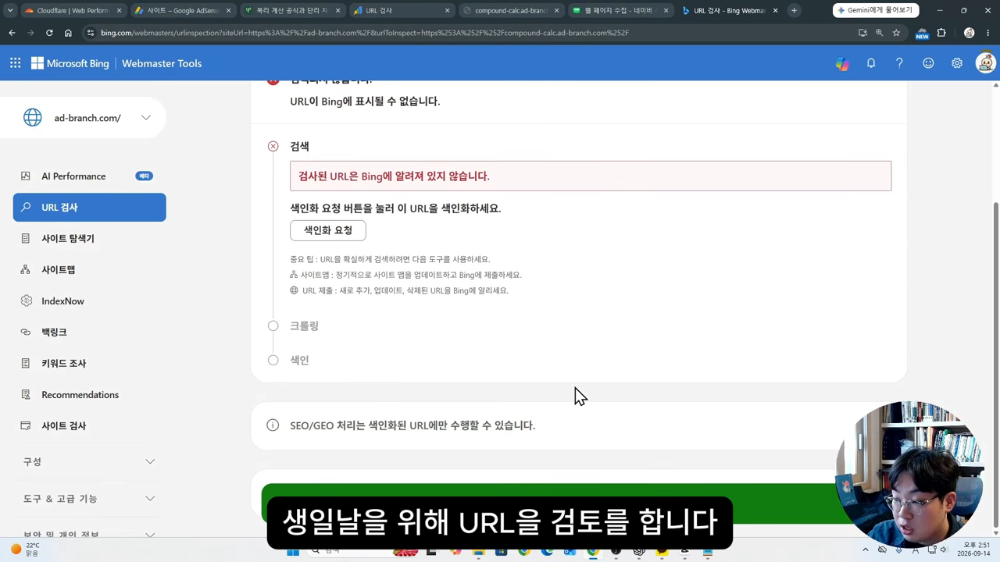
| 검색엔진 | 도구 | 소유 확인 | 사이트맵 | 색인 앞당기기 |
|---|---|---|---|---|
| 구글 | 서치 콘솔 | DNS 레코드 (클라우드플레어 자동 연결) | Sitemaps 메뉴에서 제출 | URL 검사 → 색인 생성 요청 |
| 네이버 | 서치 어드바이저 | HTML(HyperText Markup Language) 메타 태그를 AI로 추가 | 요청 → 사이트맵 제출 | 요청 → 웹 페이지 수집 |
| 빙 | 빙 웹마스터 | 서치 콘솔에서 가져오기 | 자동으로 들어오고, 직접 제출도 가능 | URL 검사 → 색인화 요청 |
전체 순서 다시 보기
영상 마지막에 발표자는 메모장 두 장에 전체 순서를 정리해 보여 줘요. 첫 장은 애드센스 세팅 7단계예요. 3번 ads.txt, 5번 반응형 디스플레이 광고, 6번 '개발 환경에서는 빈칸이 보이도록' 팁이 들어 있어요.
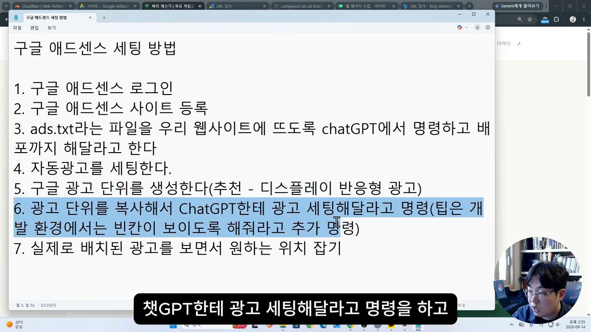
- 구글 애드센스에 로그인해요
- 사이트를 등록해요
- ads.txt를 사이트에 띄우도록 AI에게 시키고 배포까지 맡겨요 주소 뒤 /ads.txt에서 그 한 줄이 보여요
- 자동 광고를 켜요 — 모바일 전면 광고는 꼭 켜요.
- 광고 단위를 만들어요 — 디스플레이 광고, 크기는 반응형.
- 광고 코드를 AI에게 넘기고 배치를 맡겨요 — 개발 환경에서는 빈칸을 보여 달라고 덧붙여요.
- 배치된 자리를 보며 주석으로 위치를 잡아요
둘째 장은 검색엔진 등록 10단계예요. 1~5번이 구글, 6~9번이 네이버, 10번이 빙이에요.
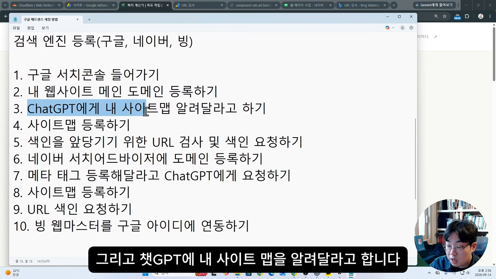
두 장을 한 그림으로 합치면 아래와 같아요. 두 갈래는 따로 진행되지만 결국 한곳에서 만나요. 검색으로 들어온 사람이 사이트를 쓰는 동안 광고가 노출되고, 그게 수익이 돼요.
flowchart LR
P["내 도메인으로 배포"] --> A1
P --> S1
subgraph AD["광고 세팅"]
A1["애드센스 사이트 등록"] --> A2["ads.txt 배포"] --> A3["자동 광고 켜기"] --> A4["반응형 디스플레이
광고 단위"] --> A5["AI 배치 + 주석 조정"] --> A6["승인 대기"]
end
subgraph SE["검색엔진 등록"]
S1["구글 서치 콘솔
사이트맵·색인 요청"] --> S2["네이버 서치 어드바이저
메타 태그·사이트맵·수집"] --> S3["빙 웹마스터
서치 콘솔 가져오기"]
end
A6 --> R["방문자가 사이트를 쓰며
광고를 봐요 → 수익"]
S3 --> R
발표자는 이게 광고 수익형 세팅의 가장 기본이라고 말해요. 노출과 수익을 더 올리는 개인적인 팁은 다음 영상들에서 이어 간다고 해요.